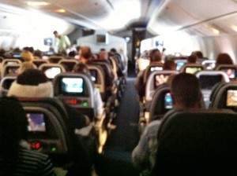

WLAN über den Wolken-Produktivtätskatalysator
Grenzenlose Produktivität
Ob die scheinbar grenzenlose Kommunikationsmöglichkeit über den Wolken wohl zur gefühlten Freiheit gehört, die schon Reinhard May besungen hat?
Im Flugzeug zwischen London und Dallas wundere ich mich, dass meine Nachbarin unentwegt mit Whats app beschäftigt ist. Außerdem sehe ich, dass einige Leute fleißig Mails senden (die Outlook-Oberfläche erkenn ich selbst aus drei Metern Entfernung). Der ganze Passagierraum kommt mir ohnehin vor wie eine komprimierte Etage bei Saturn.

Das Foto ist typisch und zwei Drittel der Passagiere nutzt zusätzlich zum Monitor am eigenen Platz noch ein eigenes Gerät, Notebook, Tablet oder Smartphone.
Auf Nachfrage erfahre ich, dass es WLAN im Flugzeug und damit Internet gibt. Für mich ehrlich gesagt neu.
Bisher habe ich im Flugzeug Mails immer als Entwürfe gespeichert und abgeschickt, sobald ich wieder auf Empfang war. Ich finde die WLAN Möglichkeit großartig, wenn nur meine Nachbarin doch ihr Telefon auf lautlos stellen würde. Da sie aber so nett ist, will ich mich nicht beschweren (grrr, selbst schuld). Bei American Airlines kostet die Nutzung für die ganze Flugzeit (9 Std.) 19 $, 14 $ für vier Stunden und 12 $ für zwei Stunden. Ich gebe zu, ein bisschen Luxus, über den Wolken auch noch WLAN, finde aber den Preis ok.
Da ich scheinbar doch etwas aufgeregter bin als gedacht, nicht schlafen kann und will, habe ich neun Stunden mit Vergnügen gearbeitet. Ich konnte feststellen, dass so eine lange Zeit, quasi angeschnallt auf Platz 21K, hervorragend geeignet ist,
a) zunächst konzentriert zwei drei Stunden Schwieriges abzuarbeiten und
b) wenn die Konzentration sinkt, Dinge zu erledigen, die nicht dringend sind aber wichtig, das sie sonst früher oder später Zeit fressen und Frust verursachen.
Zunächst habe ich an einem Vortragskonzept gearbeitet, was ich schon etwas länger vor mir hergeschoben habe, weil es mir so groß erschien. Fühlt sich gut an, das Story Board nun fertig zu haben.
Im zweiten Schritt habe ich (eigentlich wollte ich das an einem der sehr kalten Winterabende erledigen, seit Jahren übrigens☺) meinen Fotoordner und mein Laufwerk aufgeräumt. Es scheint so banal, aber die Wirkung ist eine große Befriedigung. Unbedingt zu vergleichen mit Dachboden aufräumen. Außerdem werde ich beim nächsten Paperless Kurs alle Tools direkt auf meinem Rechner zeigen, und wenn dann die Teilnehmer meine Ordnerstruktur sehen, will ich ja Vorbild sein☺.
Zum Schluss habe ich alte Mails abgearbeitet und Freunden geschrieben, denen ich schon lange schreiben wollte. Kennen Sie das: man wollte schon lange schreiben, will sich aber Zeit nehmen dafür. Bis das tatsächlich passiert, vergeht immer mehr Zeit und man glaubt, man bräuchte noch mehr Zeit….. Die hatte ich nun reichlich, quasi an Platz 21K geschnallt.
Freunde sagen bestimmt bei der Lektüre „kannst Du nicht einfach mal entspannen und aus dem Fenster schauen?“ Mache ich auch gern während des Fluges, aber alle rund um mich waren verdunkelt, da blieb nur das MacBook.
In London war die fortschreitende globale digitale Transformation der Menschheit noch nicht so offensichtlich, aber in Dallas beim Umsteigen mehren sich die Anzeichen. Ich schätze 90 Prozent der Wartenden auf dem Flughafen sind mit einem elektronischen Gerät beschäftigt.
Der Unterschied zu Deutschland: hier in Amerika lässt sich die Nutzung von elektronischen Geräten überhaupt nicht am Alter festmachen. Das fällt mir nicht zum ersten Mal auf (beim Einchecken sind es allerdings nur jungen Leute mit Boarding Pass auf dem Handy).
Bin sehr gespannt, welche Unterschiede mir in Sachen Techniknutzung und Paperless noch auffallen.
Weitere Artikel

Gar nicht lean ist auch mal gut
Das schlanke, entschlackte, effiziente Büro ist meine Leidenschaft. Doch vor einiger Zeit habe ich erfahren, dass es manchmal gut ist, nicht lean zu sein, nicht auf die „schlanke Linie“ zu achten. Ich war eingeladen, einen …

Checkliste Reisen und Arbeiten
Immer wieder habe ich gemerkt, dass auf Reisen generell zu viel einpacke, dafür aber wichtige Kleinigkeiten, die das Leben wirklich leichter machen, gern mal vergesse. Da ich immer mehr Arbeiten und Reisen verbinde, kann das …